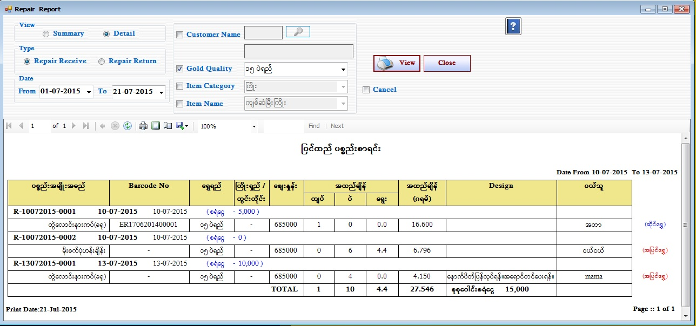

Repair Report Setup
Repair Report (Repair Receive Report)
Repair Report (Repair Return Report)

- Reports အောက်ရှိ Repair Stock Form ကိုဖွင့်ပါ။
- Repair Stock Report Form သည် ပြင်ထည်လက်ခံစာရင်း နှင့် ပြင်ထည်ပြန်ရွေးစာရင်း ကိုပြန်လည်ကြည့်နိုင်သော Form ဖြစ်သည်။
- ပြင်ထည်လက်ခံစာရင်း ကို ကြည့်လိုပါက RepairReturn Button ကို on ထားပါ။
- ပြင်ထည်လက်ခံပစ္စည်း စာရင်းချုပ် ကို ကြည့်လိုပါက Summary ကို on ထားပါ။
- ပြင်ထည်လက်ခံစာရင်း ကို ကြည့်လိုပါက Detail ကို on ထားပါ။
- မိမိကြည့်လိုသော နေ့စွဲ ကိုရွေးချယ်ပေးရပါမည်။ ရွေးချယ်ထားသော နေ့စွဲ အတွင်းရှိသော Data များကို တွေ့ရမည် ဖြစ်သည်။
- Customer အလိုက်ကြည့်လိုပါက Customer check box ကို on ထားပြီး Customer ၏ ဘေးတွင်ရှိသော မှန်ဘီလူး button ကိုနှိပ်ပြီး ကြည့်လိုသော ဝယ်သူကို ရွေးချယ် ပြီး ၎င်းနှင့်ပတ်သက်သော Data များကိုကြည့်နိုင်ပါသည်။ (သို့) Gold Quality အလိုက်ကြည့်လိုပါက Gold Quality ၏ check box ကို on ထားပေးပါ။ (သို့) Item Category အလိုက်ကြည့်လိုလျှင် Item Category ၏ check box ကို on ထားပေးပါ။ (သို့) သုံးမျိုးလုံး ကြည့်လိုပါက Customer ၊ Gold Quality နှင့် Item Category သုံးမျိုးလုံးကို on ထားပြီး Data များကိုပြန်လည်ကြည့်နိုင် ပါသည်။
- Cancel checkbox အား on ပြီး View Button နှိပ်ပါက Cancel လုပ်ထားသော Data များသာ တွေ့ရမည်ဖြစ်သည်။ ၎င်း Check Box သည် Return အားရွေးချယ်ထားပါက မှိန်နေမည်ဖြစ်သည်။